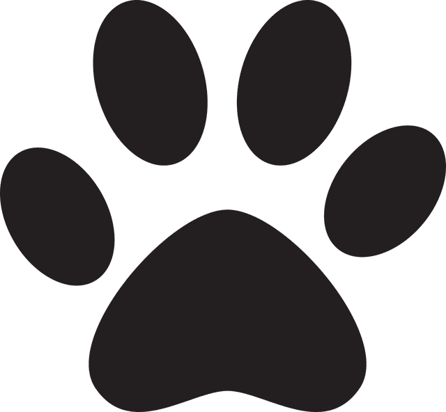

Nos léonbergs
Mayank
Number
Loukia
Naya
Laska

Le léonberg est un merveilleux compagnon, débordant de tendresse qui a besoin en retour de beaucoup d'attention et d'affection. Molosse puissant, imposant par sa stature, c'est avant tout une grosse boule d'amour. Chien sociable par excellence, le léo est un compagnon très agréable que l'on peut emmener partout sans difficulté, et qui se distingue par son attachement indéfectible à tous les membres de la famille. Il s'intègre complètement à la vie du foyer dont il suit avec intérêt le moindre mouvement. Le léonberg est « le protecteur » par excellence ! Il fait parfaitement la différence entre le visiteur ami et l'importun qu'il faut tenir à distance. Le léonberg est doté d'une très bonne mémoire et de beaucoup de malice ce qui peut le rendre un brin têtu. Une éducation basique dès 8 semaines est primordiale pour vivre en harmonie avec lui. Il est doté d'aptitudes pour le pistage, le sauvetage en mer, l'attelage...
Je pense que tous les élevages de léos ont commencé de la même façon, un jour, on tombe sous le charme de ces gros nounours, et c'est parti ! Pour ma part, il y a très longtemps que cette race me passionne et un jour, mon mari et mon fils m'ont offert CHEYENNE, une magnifique chienne léonberg. C'était mon cadeau de noel, un très beau cadeau !Quelque temps après DZARO, DEMONE, ENZO et FAYA ont rejoint notre famille. Ce sont de fabuleux compagnons !
Mayank
Number
Loukia
Naya
Laska